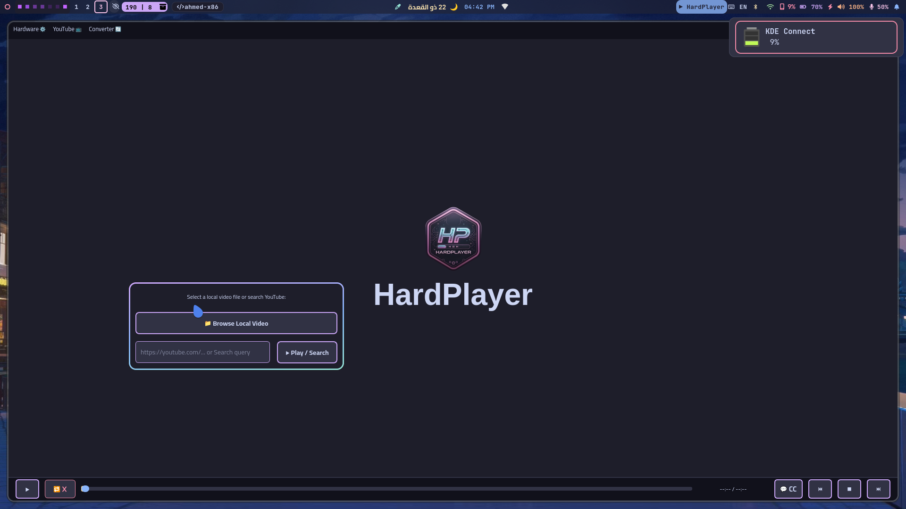

About the Project
HardPlayer (25.0.0) is a lightweight, high-performance modular media player built with Python, PyQt6, and the MPV Engine. It combines native system integration with a sleek Catppuccin Mocha aesthetic and a pro-grade YouTube acquisition engine. Developed by Ahmed (ahmed-x86), this player follows the "KISS" philosophy, specifically optimized for the Linux ecosystem.
✨ New in v25.0.0: Upgraded the core engine to version 25 and resolved startup logo display issues for installed binaries by enforcing runtime asset resolution.
📥 Download Links
| Variant | Ubuntu / Debian (DEB) | Fedora / Suse (RPM) | Arch Linux (Pacman) |
|---|---|---|---|
| Standalone (Bundled Qt) | Download DEB | Download RPM | Download Pacman |
| System-Qt (Lightweight) | Download DEB | Download RPM | Download Pacman |
✨ What's New in v24.0.0?
- Fixed Ubuntu Builds: System-Qt for Debian/Ubuntu now utilizes the 24.04 base to ensure
python3-pyqt6dependency resolution. - Embedded Assets: Nuitka now correctly embeds UI icons directly into the compiled binaries for a flawless native look.
✨ What's New in v23.0.0?
- Robust Download Resumption: Integrated state-management for tracking incomplete downloads. Automatically detects leftover
.partfiles to resume seamlessly. - Smart YouTube URL Parsing: Robust URL cleaner strips unwanted parameters (like timestamps or playlists) to prevent erratic
yt-dlpbehavior. - Extended Filename & UI WordWrap: Dynamic text wrapping for long video titles. Downloaded files append the YouTube ID to prevent conflicts.
- Granular Progress: Stream-aware UI showing exact sizes for Video/Audio and a dedicated merging status during
ffmpegfinalization.
✨ What's New in v22.0.0?
- Dual-Variant Release: Standalone (all Qt6 libraries bundled) and System-Qt (uses distro native libraries for smaller footprint).
- Pro Media Converter Suite: Multi-threaded conversion engine for Video, Audio, and Images from the top menu.
- CUDA-Assisted Pipeline: Hardware-accelerated decoding optimized for NVIDIA, ensuring perfect playback.
- Smart Progress & Safety: Real-time conversion analytics and interactive confirmation when cancelling active conversions.
📥 Pro YouTube Downloader & Enhancements (v16.0 - v21.0)
- Advanced Fetching: Download subtitles, thumbnails, embed chapters, and save metadata. Includes smart subtitle fetching with anti-ban mechanisms.
- Aria2 Acceleration: Multi-threaded acquiring (16 parallel connections) to bypass YouTube throttling.
- Universal Subtitles & Translation: Works for local and YouTube media.
- Customizable Environment: Set default format (
mp4,mkv,webm) and custom download locations directly from the menu. - Optimized UI: Catppuccin aesthetically styled progress bars, clean ANSI logic, and robust cancellation dialogs.
🛠️ Core Features & Philosophy
- Wayland-Native: Optimized for Hyprland with forced EGL contexts for stability.
- Hardware Mastery: Specialized support for NVDEC and VA-API with graceful fallbacks.
- Rich MPRIS: Seamless integration with Waybar, SwayNC, and system trays.
- Modular Engine: Decoupled core components to ensure the UI thread remains 100% lag-free.
💻 CLI Documentation
HardPlayer's terminal interface remains the fastest way to launch media.
-device [cpu|intel|amd|nvidia]: Force hardware decoding backends.-quality [1080p|720p|480p|audio]: Set YouTube streaming resolution.-search: Treat input as a YouTube search query.
Example: Fast Launch (Local File + Hardware Decoding)
hardplayer /path/to/video.mp4 -device old_nvidiaExample: Fast Launch (YouTube + Quality + Decoding)
hardplayer "https://www.youtube.com/watch?v=test" -quality 1080p -device old_nvidiaExample: Direct YouTube Search
hardplayer -search "test"
# Or combined with flags:
hardplayer -search "test" -quality 720p -device cpuExample: Audio-Only Mode (Podcasts)
hardplayer "https://www.youtube.com/watch?v=test" -quality audio📥 Installation & Requirements
Arch Linux (Pacman):
sudo pacman -S aria2 # Required for high-speed downloads
sudo pacman -U hardplayer-system-qt-25.0.0-1-x86_64.pkg.tar.zstDebian/Ubuntu (DEB):
sudo apt install aria2
sudo dpkg -i hardplayer-system-qt_25.0.0_amd64.deb📦 Requirements
mpv(libmpv)ffmpegyt-dlparia2(For accelerated downloads)
Development & Quick Run
git clone https://github.com/ahmed-x86/hardplayer.git
cd hardplayer
python hardplayer.py